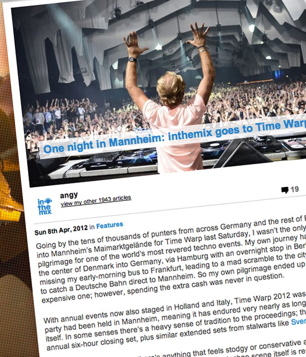

One night in Mannheim: inthemix goes to Time Warp 2012
{kind=link}

Going by the tens of thousands of punters from across Germany and the rest of Europe streaming into Mannheim’s Maimarktgelände for Time Warp last Saturday, I wasn’t the only one making the pilgrimage for one of the world’s most revered techno events. My own journey had taken me from the center of Denmark into Germany, via Hamburg with an overnight stop in Berlin, before haplessly missing my early-morning bus to Frankfurt, leading to a mad scramble to the city’s main train station to catch a Deutsche Bahn direct to Mannheim. So my own pilgrimage ended up being a rather expensive one; however, spending the extra cash was never in question.
With annual events now also staged in Holland and Italy, Time Warp 2012 was the 18th time the party had been held in Mannheim, meaning it has endured very nearly as long as dance culture itself. In some senses there’s a heavy sense of tradition to the proceedings; there’s Richie Hawtin’s annual six-hour closing set, plus similar extended sets from stalwarts like Sven Vath.
However, that’s not to say there’s anything that feels stodgy or conservative about Time Warp; instead, it’s informed by the same militant values the techno scene itself is renowned for. There are no overblown headliners booked to draw a larger crowd, no concessions to other genres, and even though the DJs might be playing to 10,000 strong crowds at some points, there are certainly no compromises in their musical selections. The organisers do it properly, and they still draw around 20,000 or more punters every year.
Photograph no longer available
A lot of the evening’s main action takes place in two equally massive halls, placed right next to each other with a thick divider between them (with not a hint of sound bleed though, I might add). These main rooms were dominated by the expected cast of heavy hitters, but what an impressive cast of heavy hitters it was: Room 1 played host to Marcel Dettmann, Ben Klock, Chris Liebing, Carl Coxand Adam Beyer among others, while immediately to the left in Room 2 was Dubfire, Maetrik, Sven Vath, Extrawelt, Richie Hawtin as well as the luxurious treat of UK stalwart John Digweed laying down a warm-up set at 10pm not long after we’d arrived.
And what a luxurious treat it was. Digweed is perhaps not someone you’d immediately think of as a headliner for such a techno-focused event, but it’s a testament to his versatility and professionalism that he set the scene flawlessly for what was to come. His set was two hours of meticulously arranged techno from the lower end of the BPM spectrum, all locked together with heavy, heavy grooves that played perfectly to the simmering tension in the room, and more importantly, laid the foundation for what was to come later in the party. The room was heaving to his menacing rumbles by the time midnight rolled around, with the production, visuals and stunning special effects also building slowly in sync.
More than a few words need to be said about the production at this point. Firstly, Time Warp put to rest the notion that it’s impossible to achieve good acoustics in a cavernous hall. Room 1 and 2 would have been able to accommodate close to 20,000 people between them at their peak, but even as they were filling up they boasted crystal-clear treble and devastating low ends, at that ‘sweet spot’ in volume that’s loud enough to rumble your ribcage without leaving your ears ringing afterwards. Absolutely flawless wherever you were, all night.
In terms of the overall focus of the lighting, visuals and special effects – ‘simple and effective’ is the best way it could be described. Time Warp lacks the over-the-top spectacle common many of the leading Dutch events, as there’s no fortress built on stage, no fireworks or flamethrowers, and certainly no dramatic voiceovers introducing the artists. However, this kind of excess would be overkill at an event where the music speaks so strongly for itself. And labeling the production as ‘simple’ shouldn’t underplay the fact this equated to ‘breathtaking’ so often throughout the night (and the morning, and the afternoon).
The meticulous attention to detail created a devastatingly ‘effective’ sense of place, and what was most impressive was how all the different elements tied together. Room 1 (with Dettmann, Klock, Liebing, Cox and Beyer) was defined by the massive pairs of cube-shaped lighting rig frames that were suspended from the ceiling, around six of them from the front to the back of the room. The DJ was flanked at the front by a massive stage design that looked like a mass of cubes stacked on top of each other to create different shapes, with visuals and lights projected onto the setup all night to create a distinct 3D effect.
Photograph no longer available
Meanwhile, the setup in Room 2 (home to Digweed, Dubfire, Vath and Hawtin) was no less impressive. The stage hosting a massive LCD screen that saw a spectacular array of menacing visuals splashed across it for the duration of the party (we didn’t catch the same theme repeated even once). Further to this, a spectacular effect was created by hanging from the ceiling a cutout circular frame of a sheet, at equal intervals along the extent of the hall. The execution was ‘simple’ perhaps, but combine it with the different colored lights that were splashed on the cutouts, at calculated angles and in sync with the visuals on the stage, and it created the jaw-dropping effect that you were travelling down a pulsing tunnel of light.
Just before 12am, Paul Ritch was laying down some live percussive clickety-clack in Room 1 to a growing cast of thousands, while Dubfire had stepped up to perform to a Room 2 that was comfortably packed by this stage, with an energy in the crowd that was well and truly rollicking; and he was musically able to match it. A common criticism bandied around by Dubfire’s detractors is that he’s “boring”, but this was far from the case on Saturday night, as his set was definitely entertaining. Perhaps the most ‘straightforward’ performance we heard all night, his two hours were packed with plenty of thrills, spills and rollicking peaks.
The grinding grooves definitely had the crowd jumping, and at this point you could feel the night building into something staggeringly huge. Anyone who’s witnessed a similar event on this scale, or even a standard nightclub packed with techno crazies, will understand you cannot undersell the exhilaration of being amongst the energy of thousands who are ‘feeling it’, and locked in tune with the music. The bubbling energy of a creeping build, as it swells slowly to explosion as the drop slams in, followed by an eruption of cheers akin to a packed football stadium. This was exactly the kind of energy bristling through Time Warp from midnight onwards; you could see the energy rippling through the crowd, feel it bubbling in tune with the percussive builds.
Photograph no longer available
Next door in Room 1, Marcel Dettmann and Ben Klock, the infamous early-morning residents from Berlin clubbing institution Berghain, were playing in succession over three hours, each laying down a set of sharp techno minimalism that was notably stripped back from what was being heard next door.
Ironically, while Dubfire’s authenticity has been questioned by many a forum lurker, his room was busting at the seams while next door while Dettmann and Klock were pulling a slightly more modest crowd; the warmth of the reception didn’t quite match the slavish devotion they receive at Berghain, but those who stuck with the duo were rewarded with an atmosphere of unbridled intensity, and almost unbearable tension. Lasers exploded over the crowd on the dot of 1am as one of their thundering buildups peaked.
A quick trip over to Room 3 at 2am emphasised the wealth of musical riches hosted across the different corners of the venue; Laurent Garnier was showcasing his new ‘LBS’ live set-up, a lot more melodic than the unrelenting heaviness of the main rooms. The room was about half the size, but it was just as heaving, and the production was nearly as impressive. Again boasting excellent sound, the LCD strips laid across the ceiling were flashing colors in unison with the bigger panels on stage. This was one of the few tragedies of Time Warp; the many treats on the main two stages meant it was nearly impossible to tear yourself away to witness the ridiculous amount of talent across the other four stages, which inclduded Loco Dice, Marco Carola, Kevin Saunderson, Steve Lawler,Magda and Jamie Jones, just to scratch the surface…
The peak of the very, very long party arguably came a little after 2am when CLR Records heavy Chris Liebing stepped up to Room 1 to deliver a set of seething, unrelentingly industrial techno. If Dettmann and Klock were intense, then Liebing stepped it up a notch or ten, and the crowd was truly busting at the seams by this stage. The steady throb of the kick drum felt like the harbinger of the apocalypse, and this was easily the hardest, heaviest point of the entire party, and timed perfectly to get the most out of the explosive energy of the crowd.
If it’d come any earlier or later, it would have been a little too much; and for us, after 90 minutes of cranking techno, a little respite was needed. Luckily enough, everybody’s favorite techno Papa Sven Vath had commenced his four-hour set next door. He’d already jumped deep into one of his trademark musical K-holes, though alongside Liebing’s pounding industrial madness, Vath’s tripped-out sounds seemed nearly fluffy in comparison. There was a noticeably stronger female contingent getting down to the relatively thicker grooves, and Vath prancing across the stage with his usual showman antics, flanked by dancers who helped accentuate the theatrical vibe in the room. A delicious, warm melody broke out over the clicky rhythms at one point, synced perfectly with the blue lights shooting across the suspended hanging from the ceiling, creating the afore mentioned ‘tunnel’ effect; one of those simply unforgettable moments.
If the party was peaking at this stage, you could most definitely feel it around the entrance to the two main rooms – a crowded junction where several toilets where located, as well as the pathways to the other smaller rooms. The crush at this point was nearly unbearable, taking up to 15 minutes to move between the well-stocked food halls and chill out areas out the back of the venue, and back to the music. While it was really the only criticism you could level at the organisers, around 3am the overcrowding became nearly intolerable; Carl Cox launched into his set (and onto the microphone) with all his inimitable energy around 4:30am, but the crowd was noticeably exhausted by the time he reached his halfway point. This would have to at least partly be attributed to the early-morning crush.
Photograph no longer available
By the time Swedish stalwart Adam Beyer took the reigns after 6am, the powerful tide of energy in the crowd had smashed up against the rocks, and then retreated again, and Time Warp became a true lesson in endurance from hereon in. A zombie shuffle had set in amongst the still massive crowd, and everyone was looking noticeably tired. With the festivities scheduled to stretch to 2pm in the afternoon, I was wondering how anybody would make it.
Luckily though, Beyer was able to drop in with those warehouse-shaking rhythms we’ve heard regularly from his Drumcode label in recent years. It was the exact kind of pumping approach the crowd needed at this latter stage of the night, and as his two-hour slot moved on, he gradually took us into some deeper, more hypnotic territory. He paced it like a pro.
Next door Extrawelt were pulling off a similar trick of squeezing the last drop of blood out of the audience, their live performance filled with plenty more broken beats and funk than we’d heard at the main stages. By the time Richie Hawtin graced the stage at 8am though, any doubt the crowd would go the distance were dismissed, as the party collectively (and amazingly) found its second wind. Energy seethed through the crowd just like the punters were milling through the door, and you could see the kind of devotion DJs like Hawtin inspire in Europe.
All the other rooms were closed by 11am, but Hawtin’s performance was scheduled to carry on until 2pm and beyond. An annual six-hour closing set might seem excessive, but it also demonstrates just how far Time Warp is from the Australian festivals where we’re used to seeing our international visitors whisked off the stage after a brisk 90 minutes.
This certainly wasn’t the time of the morning for deep, clicky builds, and fittingly, Hawtin came out pounding with a set of bouncy techno that was heavy on the rubbery groove, with every last flick of the FX pad ringing out crystal-clear over the speakers. Somehow he kept the energy levels high all morning, with smiles and fists pumping all around us. It’s the special kind of energy you get at an early-morning rave, or at Berghain once the residents step up after 9am.
Behind Hawtin appeared the menacing image of solar eclipse, with spotlights slowly dropping from the ceiling onto the crowd, one after the other from the beginning of the hall to the end, creating the effect of lights pin-wheeling into the crowd. By the time we called it quits around midday, the room was still going strong.
For anyone who’s used to watching these kind of DJs at a sidestage of a festival, or in a club with around 300 people, it was difficult to even believe the scale and professionalism at which Time Warp had been executed – the fact there were this many people, with this much exhaustive effort put into the production, for this kind of music.
There was maximum entertainment, with zero compromises; it’s arguably a reflection of the fact that more than any other dance genre, techno takes itself pretty damn seriously. Whether you’re talking about the artists, the record labels or the crowd; this is serious business. The punters have an open mind to whatever the DJ is throwing down, and going on the unwavering devotion to Hawtin’s closing marathon, they’re in it for the long haul. Every other scene could only hope to have a flagship party as excellent as this to make the pilgrimage for every year.